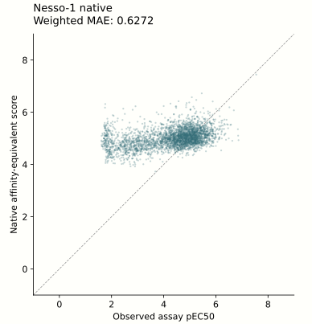
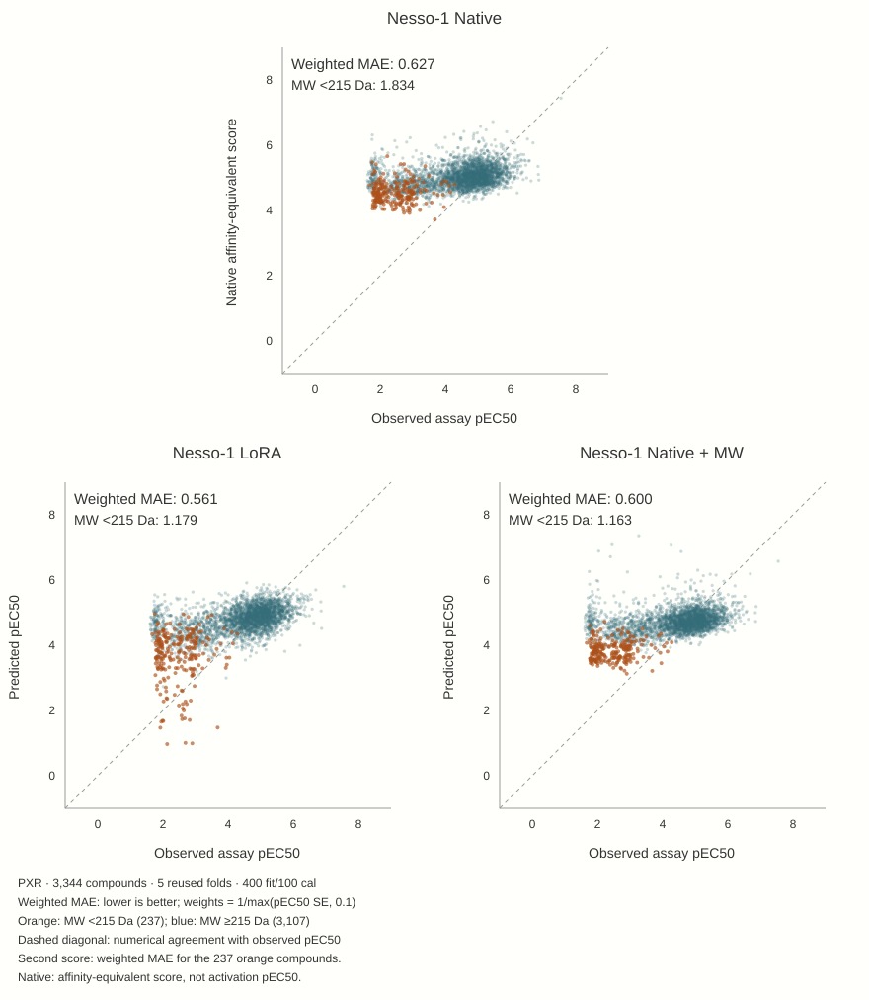

Finetuning Nesso-1 to predict PXR induction
Nesso-1, developed by Recursion Pharmaceuticals, is a protein-ligand affinity prediction model that is built on cofolding architecture, but without producing atomic-level structures. The benefit of this is similar performance to full-atomic models, but significantly increased throughput and significantly smaller resources needed to fine-tune.
The OpenADMET blind challenge for PXR provided a new dataset of ~5000 matched-assay measurements of induction (pEC50). Performance of stock affinity models and even custom ML models was relatively poor. I wondered if we could fine-tune Nesso-1 on this data and produce a model that can better predict this specific PXR endpoint. This would demonstrate two things - 1) the adaptability of Nesso-1 to new data and 2) application of Nesso-1 to a different endpoint (induction rather than binding).
The unchanged Nesso-1 score transfers poorly to this PXR induction endpoint: most predictions are compressed into a narrow band, despite a much broader observed potency range. This motivates testing whether fine-tuning can adapt its features to this cellular endpoint.

Download PNG · Download SVG · Plotted predictions · Exact metric and provenance
{kind=link}
{kind=link}
1. General methodology
We examined the Nesso-1 architecture and selected promising layers for fine-tuning on the PXR endpoint. We first tested the final regression heads using cached representations, then tested low-rank adapters (LoRA) in the upstream affinity module. The main trunk and external ESM model were not trained.
We compared these fitted models with unchanged Nesso, readouts of frozen Nesso representations, and ligand-only descriptors. Molecular-weight controls tested whether a simpler correction could explain the visible gains; a separate hybrid tested whether frozen Nesso features added information beyond descriptors. The comparisons below use reused development folds and are retrospective, not a new blind-challenge evaluation.
Methods and experiments:
2. Results
2.1. Tuning helps, but descriptors remain stronger
The native score is compressed around a narrow potency range. Fitting the final heads moves predictions toward the assay values; adding upstream LoRA helps further, without closing the gap to ligand descriptors. The matched N500 comparison uses 400 fitting labels and 100 calibration labels per fold, with one label draw and seed across five reused development folds—not five independent replications.

Prediction panels share full-range axes and subgroup colors.
What was actually fitted, and how much did it help? →
Related experiments: head-only tuning · Upstream LoRA comparison.
2.2. A molecular-weight control explains much of the visible correction
With the observation that much of the LoRA effect was seen in correctly lowering the potency prediction of small molecules, I wanted to see if adding a single molecular weight feature to Nesso would perform similarly.
Compared to the Nesso LoRA, the simple molecular weight model is able to produce very similar results.

Weighted MAE is absolute error averaged with weights 1/max(reported pEC50 SE, 0.1); raw MAE weights compounds equally.
Molecular-weight control methods and supporting results →
Related experiment: molecular-weight controls.
2.3. Frozen features add something descriptors miss
The strongest completed combination keeps Nesso frozen and blends a ridge readout of its representations with descriptor LightGBM. Weighted MAE moves from 0.501 to 0.487; ranking improves too. This is a modest complementary signal, not a visual transformation of the prediction cloud.

See the size of the gain and the potency trade-off →
Related experiments: hybrid pilot · All-fold hybrid comparison.
2.4. The correction is real; the proposed mechanism is not established
Do small molecules bind without activating PXR? The efficacy diagnostic does not establish that explanation. Their normalized Emax is higher, not lower, while their pEC50 uncertainty is much larger. The raw and normalized Emax scales tell different stories.
| Assay summary (median) | MW <215 Da (n=237) | MW ≥215 Da (n=3,107) |
|---|---|---|
| Positive-control-normalized Emax | 1.240 | 0.977 |
| Baseline-relative Emax (log2 fold change) | 2.170 | 2.530 |
| pEC50 standard error | 0.558 | 0.141 |
Small molecules have higher normalized efficacy, lower baseline-relative response, and less precise fitted potency. These are subgroup medians, not a causal explanation.
Conclusion: retain descriptors as the standalone reference and the frozen-feature hybrid as an incremental candidate. Its weighted improvement must be considered alongside the lower-potency penalty. The next decisive comparison needs a frozen selection rule and untouched evaluation, not another retrospective winner.
Examine the efficacy test, CYP side branch and next decision →
Related experiments: efficacy and uncertainty · CYP transfer.
Supporting experiments · 19 studies
Complete study records and original evidence, including diagnostic side branches.
Edit/read the canonical overview Markdown · Source map and SHA-256 hashes